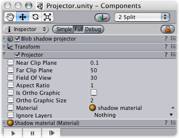
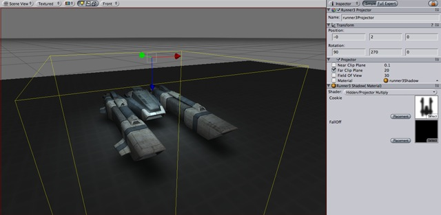

Previous
Previous
Projectors allow you to project an arbitrary material on all objects that intersect its frustum.

The Projector
Properties
| Property: | Function: |
|---|---|
| The Near clip plane of the Projector. Objects in front of the near clip plane will not be affected. | |
| The Far clip plane of the Projector. Objects beyond this distance will not be affected. | |
| The field of view in degrees. This is only used if the Projector is not Ortho Graphic. | |
| The Aspect Ratio of the Projector. This allows you to tune the height vs width of the Projector. | |
| If enabled, the Projector will be Ortho Graphic instead of perspective. | |
| The Ortho Graphic size of the Projection. this is only used if Is Ortho Graphic is turned on. | |
| The Material that will be Projected onto Objects. | |
| Objects that are in one of the Ignore Layers will not be affected. By default, Ignore Layers is none so all geometry that intersects the Projector frustum will be affected. |
Details
With a projector you can:
- Create shadows
- Make a real world projector on a tripod with another camera that films some other part of the world using a render texture
- Create bullet marks
- Funky lighting effects.

A projector used to create a Blob Shadow for this hovercraft
If you want to create a simple shadow effect, simply drag the StandardAssets/Blob-Shadow/Blob shadow projector prefab into your scene. You can modify the material to use a different Blob shadow texture.
Hints
- Projector Blob shadows can create very impressive Splinter Cell-like lighting effects if used to shadow the environment properly.
- When no Falloff texture is used in the projector's material, it can project both forward and backward, creating "double projection". To fix this, use an alpha-only Falloff texture that has a black leftmost pixel column.